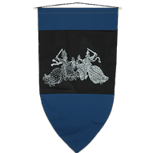

Here are the list of steps you need to do to successfully fulfill Romario's call to action!
Step #1:
Now that you have filled out the election formed and voted for Romario, it is time to take action! For the first step to taking action for a new change for the Coalition of Determined Coders (CDC). To do this you need to first follow Romario on his Instagram: @lawyer_romario. And make sure you like all of his posts!
Step #2:
For the next step, all you will do is go to twitch.tv/Rolomics. Twitch is a social media platform that allows users to stream video games for a long time and interact with their viewers. Romario will be streaming soon, so make sure you follow twitch.tv/Rolomics and view his streams to interact with him.
Step #3:
This next step is super simple. Go to @lawyers_and_waffles on Instagram. This is Carter's account. Make sure you tell him this "Romario is a better Master Coder Than You". If multiple individuals complete this task, you can now move on to the final step. And trust me, the final step is glorious!
Step #4:
For the final step, all you really need to do is tell Carter to post an Instagram post where he apologizes that he was manipulating everybody and to accept that I am a better Master Coder than him. Also tell him that Romario is a better lawyer than him, and Romario will always reign supreme and become a LEGEND!